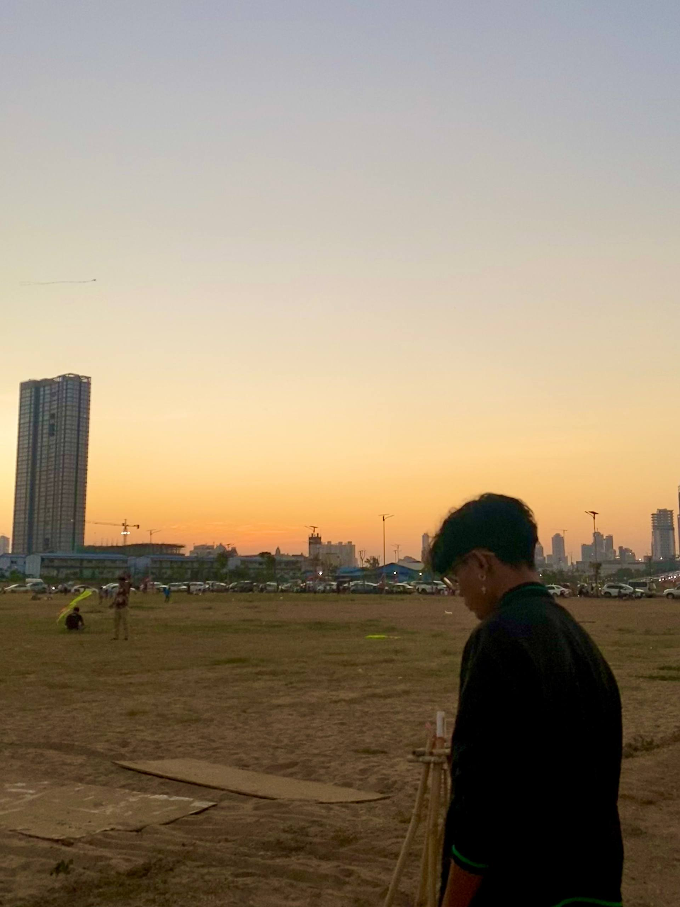

Interior design is the art and science of enhancing the interior of a building to achieve a healthier and more aesthetically pleasing environment for the people using the space. An interior designer is someone who plans, researches, coordinates, and manages such projects.
Interior design is a multifaceted profession that includes conceptual development, space planning, site inspections, programming, research, communicating with the stakeholders of a project, construction management, and execution of the design.

I am a first-year student at PSE Institute in the TVET program. So far, I have learned HTML, CSS, and JavaScript. I really enjoy doing research and exploring new things, especially in technology and web development.
I designed this website because I am passionate about interior design and architecture. I enjoy creating beautiful and functional spaces, both inside and outside the house, through interior and exterior decoration.
Contact Me